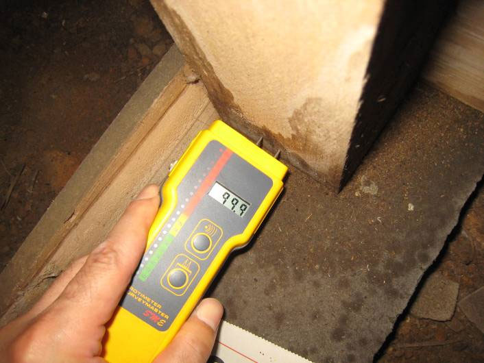
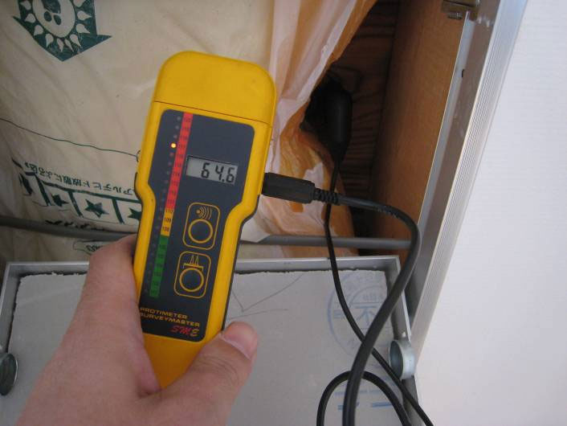

宅地建物取引士と建築士の ダブルライセンスで、 あなたの住まい選びを サポートします。
三井グループで培った 建物調査の経験を活かし、 建築士の視点から 安心できる住宅購入を お手伝いします。
無料相談はこちら
仲介手数料 最大無料
対象物件なら仲介手数料が最大無料。
ご購入前に無料でお見積りいたします。
床下木部の含水率99.9% 異常な数値です。
床下は普段見ることができない場所です。
湿気が多いと、建物の寿命を縮める原因になることがあります。

建築士が床下点検口から確認し、
土間や木部の湿気を測定します。
※ 点検口から確認できる範囲の簡易チェックとなります。
新築住宅でも、屋根裏で結露が発生することがあります。

実際の測定例
野地板含水率
64.6％
結露が確認された場合は、
原因を確認することが大切です。
※ 小屋裏調査は、棚を壊す恐れがあるので、現在、原則として、行っていません。
「商談中です」「申込みが入りました」と言われ、 気になる物件を紹介してもらえないことがあります。
一部の不動産会社では、 他社からの購入申込みを受け付けないなど、 不適切な対応が問題となることがあります。
弊社のお客様からも、 このようなご相談をいただいております。
気になる物件がございましたら、 お気軽にご相談ください。
※ 囲い込みの解明には、お客様からの情報やご協力が必要となります。
新築一戸建て・リノベーションマンションは、 条件により仲介手数料が無料になります。
中古戸建・土地は、 半額・割引でご案内しております。
※ 対象物件・条件があります。詳しくはお気軽にお問い合わせください。
※ 物件のURLを、教えてください。
仲介料見積もりはこちら